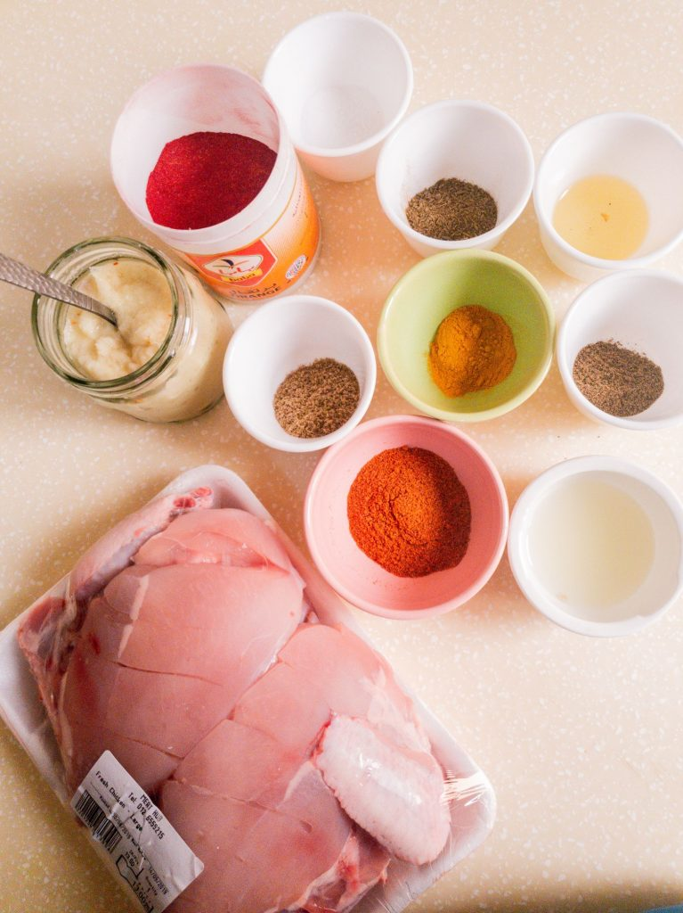
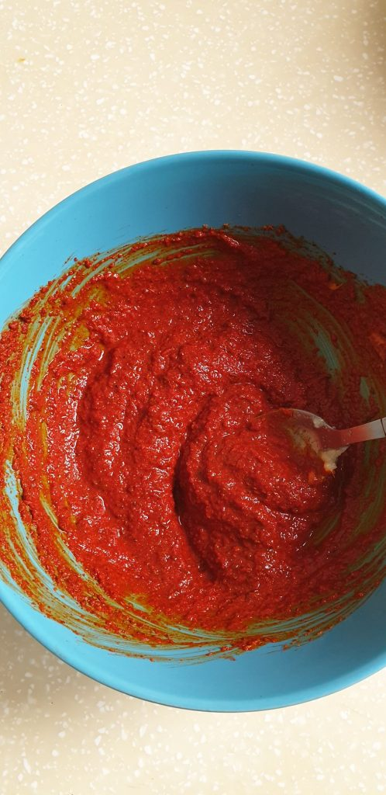
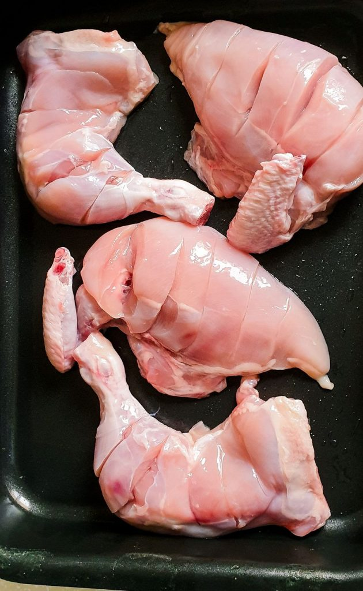
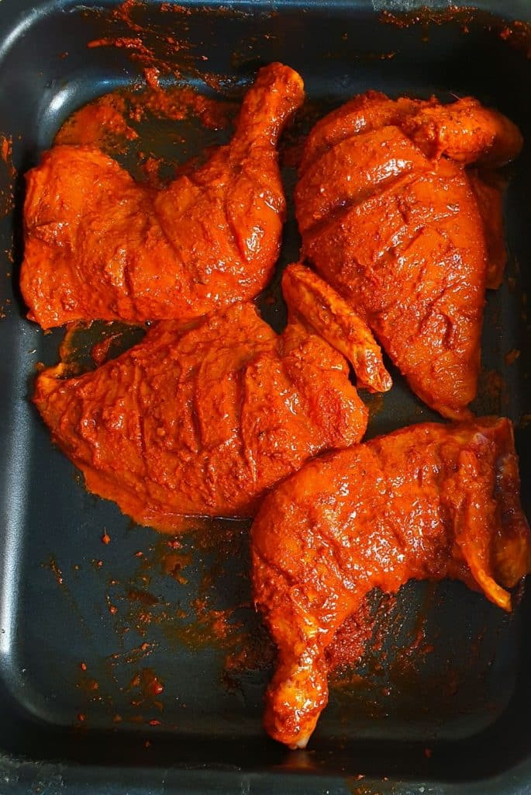
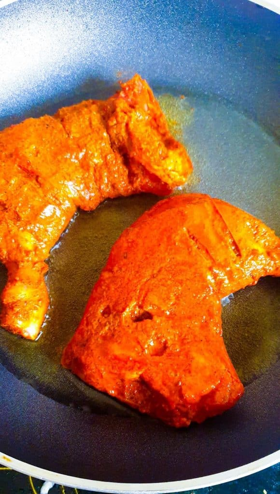

IndexPage
About Page
Traditionally speaking, Chicken Tikka is made my preparing Chicken
pieces in a spicy marinade and grilling them on top of Red hot coals
(called Angethi in Urdu). It is mostly served with a spicy Mint
Chutney or Tarmarind Chutney along with some lemons and sliced onions.
yummmm!
So many variations of this popular dish have popped up ever since.
There is a boneless version, a biryani version, a curry version and
even a fried version. But today I thought, before I talk about any of
the fusion recipes, let’s cover the basic spices to make Chicken
Tikka. There are spice mixes now available to use to make Tikkas, but
I prefer the aroma of fresh spices. And sometimes, you wanna feel like
a real chef, amirite?
Here’s a picture of all the things you’ll need to cook up this
deliciousness. And I am diving right into the steps now.

PREPARING THE CHICKEN TIKKA MARINADE
-
So the above picture depicts pretty much all the things you need to
marinate your Chicken. (also, one of the small bowls that looks empty
actually has salt in it…you know just FYI stuff)
-
Ok so its pretty basic, just dump all the measured ingredient (spices,
paste and liquids) in the bowl and mix well.
NOTE: The marinate is going to be slightly sour because of the heavy
vinegar and lemon content but don’t worry about that because once cooked,
this flavor is going to be subdued and work really well with all the other
spices.

-
The color of Chicken Tikka is usually due to an addition of orange red
color, some restaurants go very heavy handed with the color and I
personally don’t like my hands to turn orange while I am eating. So its
a personal preference of how much color you want to add. I like to add
just enough to give a reddish hue but not go over the top really. Use
good quality color to do this, some people use beetroot juice to give a
natural color. I haven’t tried this as yet, if you have let me know how
that works out for you.
DISCLAIMER: Use a pair of gloves to rub the spices over your chicken if
you don’t want your hands to be orange after the quick chicken
massage
CAN YOU SUBSTITUTE SOMETHING IN THE MARINADE?
-
If you don’t want your tikkas to be spicy, you can always skip or
decrease the red chili. powder. Or if you are short on one of the
spices, thats ok, it won’t change the flavor drastically. However
vinegar in this case is quite essential. Vinegar is going to act as a
meat tenderizer here so you want to have that in your mixture. The oil
prevents the chicken from drying out while its in the fridge, so that’s
another important component.

-
One chicken will give you 4 Tikka cut pieces, 2 thighs and 2 breast
pieces. If you are making more than 1 chicken, just double the recipe
and you’ll be good to go. Use a good knife and add some cuts to your
chicken along the length so that it has deep areas for the marinate to
work in.
-
Go ahead and rub the marinate all over the chicken. Give it a good
little massage like the one you would want in a spa. (ugh desperately
need a spa day too). Make sure you cover all the nooks and crannies.
Once you are done, cover up the chicken with foil or cling wrap or a box
lid and keep it in the fridge to marinate.

HOW LONG SHOULD YOU MARINATE IDEALLY?
-
Well, a minimum of 4 hrs is needed for all the spices to rub in really
well. If you are using boneless chicken, you can go ahead and cook it
immediately but for chicken with bone, I would recommend a minimum of 4
hrs to an overnight marination duration. The reason is, that this gives
vinegar enough time to react with the chicken and tenderize it. It also
makes the top layer of the chicken tough so all the juices are sealed
inside the chicken piece that gives you a lovely tender Chicken tikka
once its cooked.
HOW TO COOK THE CHICKEN TIKKA?
There are 3 ways in which you can prepare your Tikka
- On the stove.
- Bake in the oven.
- BBQ it on an outside grill.
-
I usually prefer making it on the stove because it’s the easiest method
and I don’t really fire up the oven for that. For both cases, baking or
cooking on the stove, you are going to braise the chicken at high heat
on a grill pan first and then proceed to slow cooking.

-
This helps in sealing all the juices in, getting a nice color on top and
have that charred look that an outdoor Tikka would have.
-
For an outdoor grill, just drop in the tikka on the grill and keep
coating it with oil every 5 mins with a brush. Keep turning the tikka
everytime you oil it. It will take roughly 20 mins to prepare your
chicken this way.
YOU CAN FREEZE THE CHICKEN!
-
So, let’s say you are someone who likes to meal prep in advance, this
recipe is totally for you. On days that you prepare your week’s menu,
you can marinate the chicken and freeze it immediately. It can stay in
the freezer for up-to 2 months. When you are ready to have it, remove
from the freezer and once its thawed, grill it up!
LEFT-OVERS ARE A BLESSING
-
With other dishes, not so much, but with tikka I am always hoping for a
little left over to happen. Mostly because this spicy chicken goo sooo
well with so many things. If your looking for ideas, check out the
Chicken Tikka Sandwich recipe on the blog to use your left overs.
-
If you try this chicken tikka recipe out, or have any questions about it
or just want to say hi, drop in a comment below and I’ll get right back
at ya! Have an AWESOME day!